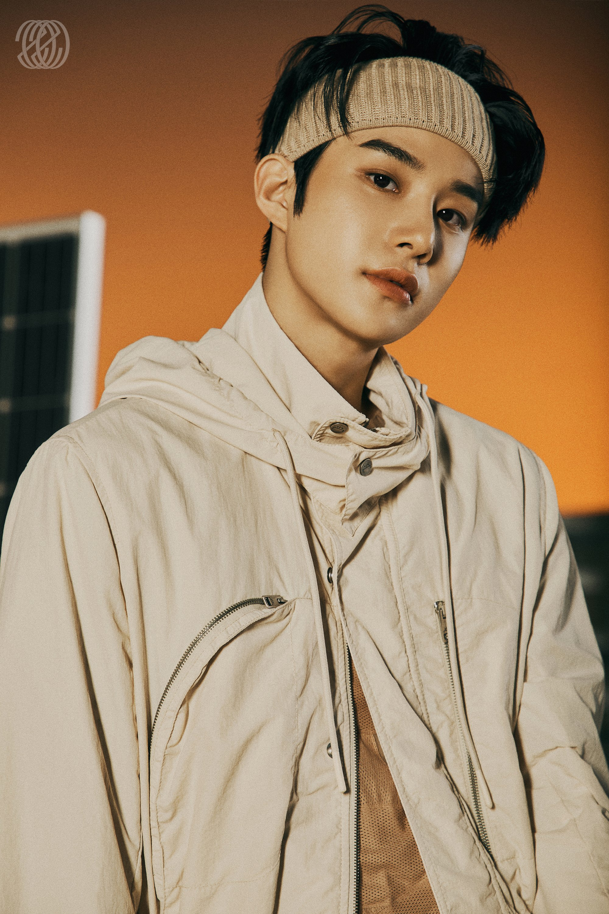
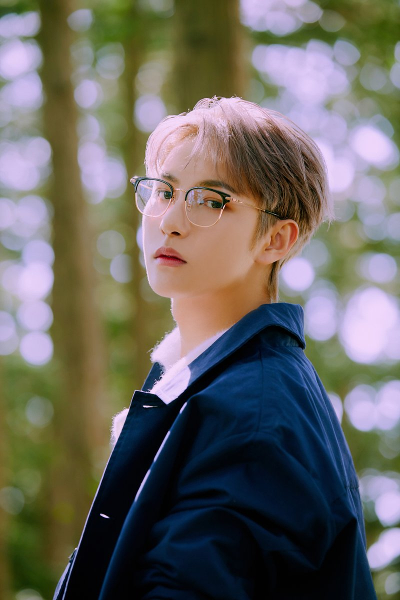

NCT
NCT (кор. 엔시티); расшифровывается как Neo Culture Technology) — южнокорейский бойбенд, сформированный в 2016 году компанией S.M. Entertainment.
Основатель компании Ли Су Ман объяснил концепцию группы тем, что в её составе может быть неограниченное количество участников, объединённых в юниты и имеющих возможность продвигаться по всему миру.
Главный юнит NCT U дебютировал в апреле 2016 года с синглами «The 7th Sense» и «Without You». Второй юнит NCT 127, основанный в Сеуле, дебютировал в июле с мини-альбомом NCT#127. Третий юнит NCT Dream дебютировал в августе с синглом «Chewing Gum». В январе 2019 года дебютировала китайская группа (юнит NCT) WayV с сингло-альбомом The Vision. Официальное название фандома группы — NCTzen, сокращённое — czennie (сиджени).
УЧАСТНИКИ

ТЭИЛЬ
Мун Тэиль (кор. 문태일), родился 14 июня 1994 в Сеуле, Корея
Был представлен в качестве участника проекта SM ROOKIES в октябре 2015. Позиция в группе: главный вокалист.
Units:
ДЖОННИ
Со Ёнхо (кор. 서영호), родился 9 февраля 1995 в Чикаго, США
Присоединился к S.M. Entertainment в 2007 году через SM Global Audition в Чикаго. Был представлен в качестве участника проекта SM ROOKIES в декабре 2013. Позиция в группе: саб-рэпер, саб-вокалист, ведущий танцор.
Units:
ТЭЁН
Ли Тэён (кор. 이태용), родился 1 июля 1995 в Сеуле
Был представлен в качестве участника проекта SM ROOKIES в декабре 2013. Позиции: лидер, главный рэпер, главный танцор и саб-вокалист.
Units:
- NCT-127
- NCT-U
- Группа SuperM
ЮТА
Накамото Юта (яп. 中本 悠太), родился 26 октября 1995 в Осаке, Япония
Был представлен в качестве участника проекта SM ROOKIES в декабре 2013. Позиция в группе: саб-вокалист, ведущий танцор.
Units:
КУН
Цянь Кун (кит. трад. 錢坤, упр. 钱坤, пиньинь qián kūn), родился 1 января 1996 в провинции Фуцзянь, Китай
Был представлен в качестве участника проекта SM ROOKIES в 2015 году. Позиции: лидер, главный вокалист.
Units:
ДОЁН
Ким Донён (кор. 김동영), родился 1 февраля 1996 в Кури, провинция Кёнгидо
Был представлен в качестве участника проекта SM ROOKIES в январе 2015. Позиция: главный вокалист.
Units:
ТЭН
Читтапон Личайяпорнкул (тайск. ชิตพล ลี้ชัยพรกุล), китайское имя Ли Юнцинь (李永钦), родился 27 февраля 1996 в Бангкоке, Таиланд
Окончил Shrewsbury International School в Таиланде. Занимает позиции ведущего вокалиста, саб-рэпера и главного танцора.
Units:
- NCT-127
- WayV
- Группа SuperM
ДЖЕХЁН
Чон Юно (кор. 정윤오), Чон Джэхён (кор. 정재현), родился 14 февраля 1997 в Сеуле
Был представлен в качестве участника проекта SM ROOKIES в декабре 2013. Позиции: ведущий вокалист, саб-рэпер, ведущий танцор.
Units:
ВИНВИН
Дун Сычен (кит. 董思成, пиньинь dǒng sīchéng), родился 28 октября 1997 в провинции Чжэцзян, Китай
Был представлен в качестве участника проекта SM ROOKIES в январе 2016.Позиции: ведущий танцор и саб-рэпер.
Units:

ЧОНУ
Ким Чону (кор. 김정우), родился 19 февраля 1998 в Кунпхо, Корея
Был представлен в качестве участника проекта SM ROOKIES в апреле 2016 года. Позиция: ведущий вокалист, ведущий танцор.
Units:
ЛУКАС
Вон Юкхэй, на путунхуа Хуан Сюйси (кит. 黃素熙), родился 25 января 1999 в Гонконге
Был представлен в качестве участника проекта SM ROOKIES в апреле 2016 года. Занимает позиции ведущего рэпера и ведущего танцора.
Units:
МАРК
Марк Ли (Mark Lee), родился 2 августа 1999 в Ванкувере, Канада
Был представлен в качестве участника проекта SM ROOKIES в декабре 2013. Позиции: главный рэпер, саб-вокалист, главный танцор.
Units:
- NCT-127
- NCT-U
- Группа SuperM
СЯОЦЗЮНЬ
Сяо Дэцзюнь (кит. трад. 肖德俊), родился 8 августа 1999 года в городе Дунгуань, провинция Гуандун, Китай
Был представлен как участник проекта SM Rookies 17 июля 2018 года. Занимает в группе позицию главного вокалиста.
Units:
ХЕНДЭРИ
Хуан Гуаньхэн, на кантонском диалекте Вон Куньхан (кит. 黄冠亨), родился 28 сентября 1999 года в Макао, Китай
Был представлен как участник проекта SM Rookies 17 июля 2018 года. Позиции: саб-рэпер, и танцор.
Units:

РЕНДЖУН
Хуан Жэньцзюнь (кит. 黄仁俊, пиньинь huáng rénjùn), родился 23 марта 2000 в Гирине, Китай
Был представлен как участник проекта SM Rookies 17 июля 2018 года. Позиция: главный вокалист.
Units:
ДЖЕНО
Ли Джено (кор. 이제노), родился 23 апреля 2000 года в Инчхоне
Был представлен в качестве участника проекта SM ROOKIES в декабре 2013. Позиции: ведущий рэпер, главный танцор, саб-вокалист.
Units:
ХЭЧАН
Ли Донхёк (кор. 이동혁), родился 6 июня 2000 года в Сеуле
Был представлен в качестве участника проекта SM ROOKIES в марте 2014 под именем Донхёк. Позиции: ведущий вокалист, ведущий танцор.
Units:
ДЖЕМИН
На Джэмин (кор. 나재민), родился 13 августа 2000 в Сеуле
Был представлен в качестве участника проекта SM ROOKIES в апреле 2015. Позиции: ведущий рэпер, саб-вокалист.
Units:

ЯНЯН
Лю Янян, родился 10 октября 2000 года на острове Тайвань
Был представлен как участник проекта SM Rookies 17 июля 2018. Занимает позиции ведущего рэпера и ведущего танцора.
Units:
ШОТАРО
Осаки Шотаро (яп. 大崎将太郎), родился 25 ноября 2000 года в Канагаве, Япония
Имеет продвижение в NCT U и NCT 2020. В будущем получит продвижение в новом юните. Занимает позицию танцора.
Units:

СОНЧАН
Чон Сончан, родился 13 сентября 2001 года в Сеуле, Корея
Продвигается в NCT U и в NCT 2020. Позиции: ведущий рэпер, танцор.
Units:
ЧЭНЛЭ
Чжон Чэнлэ (кит. трад. 鍾辰樂, упр. 钟辰乐, пиньинь zhōng chénlè), родился 22 ноября 2001 года в Шанхае
Стажировался в S.M. Entertainment всего 3 месяца. Позиция: ведущий вокалист.
Units:
ДЖИСОН
Пак Джисон (кор. 박지성). Родился 5 февраля 2002 в Сеуле
Был представлен в качестве участника проекта SM ROOKIES в декабре 2013. Позиции: рэпер, ведущий танцор, ведущий вокалист и макнэ NCT.
Units:
UNITS
NCT U (엔씨티 유)
Первый саб-юнит бойзбэнда NCT. NCT U не состоит из постоянных участников, линия мемберов постоянно меняется. NCT U дебютировали 9 апреля 2016 года под лейблом агентства SM Entertainment.
NCT 127 (엔씨티 127)
Второй саб-юнит группы NCT. На настоящий момент саб-юнит NCT 127 состоит из 10 участников: Тэиль / Taeil, Джонни / Johnny, Тэен / Taeyong, Доён / Doyoung, Юта / Yuta, Джехён / Jaehyun, Вин Вин / Win Win, Чону / Jungwoo, Марк / Mark, Хэчан / Haechan. NCT 127 дебютировали 7 июля 2016 года под лейблом агентства SM Entertainment.
NCT Dream (엔씨티 Dream)
Третий саб-юнит группы NCT. В настоящий момент саб-юнит NCT Dream состоит из 6 участников: Ренчжун / Renjun, Джено / Jeno, Хэчан / Haechan, Чэн Ле / Chen Le, Джисон / Jisung, Джемин / Jaemin. Марк / Mark был в составе данного саб-юнита, однако, состав участников группы NCT Dream постоянно меняется. Было объявлено, что возрастной лимит участников в группе 19 лет, поэтому после 19 лет участники закончат свою деятельность в NCT Dream. Группа NCT Dream дебютировала 24-ого августа 2016 под лейблом агентства SM Entertainment.
WayV (威神V, WeiShen V)
Четвертый сабюнит NCT, базирующийся в Китае, что сделало его первым сабюнитом NCT вне Кореи. WayV находится под крылом китайского эксклюзивного лейбла Label V, принадлежащего S.M Entertainment. Участники WayV: Кун / Kun, Тэн / Ten, ВинВин / WinWin, Лукас / Lucas, Сяоцзюнь / Xiao Jun, Хендери / Hendery и ЯнЯн / YangYang. WayV дебютировали 17 января 2019 с сингл альбомом “The Vision”.